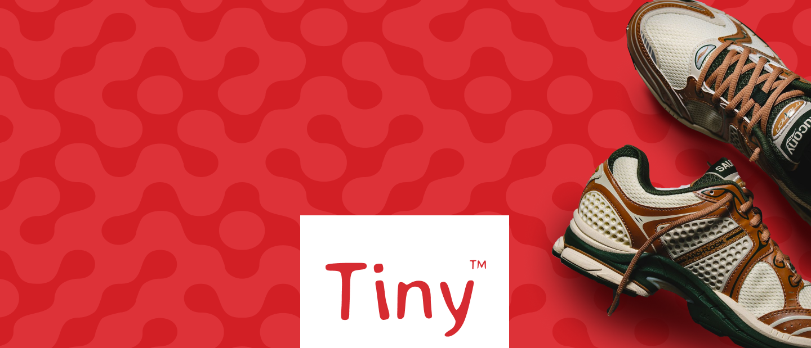
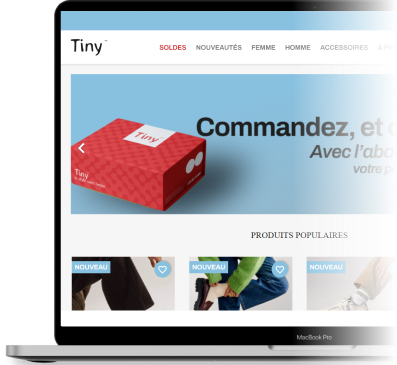
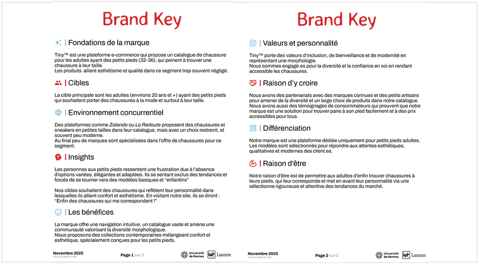
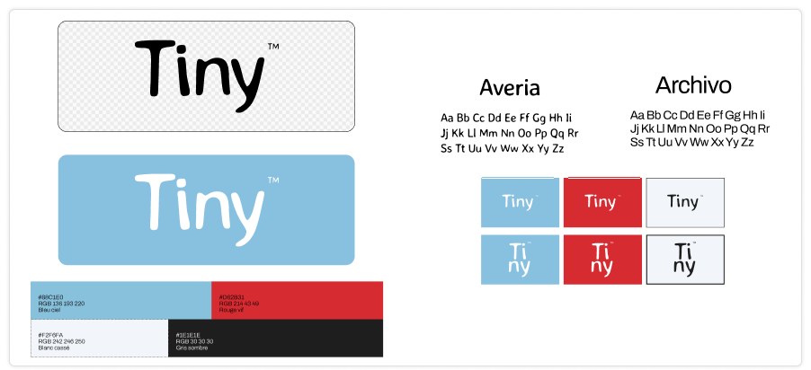
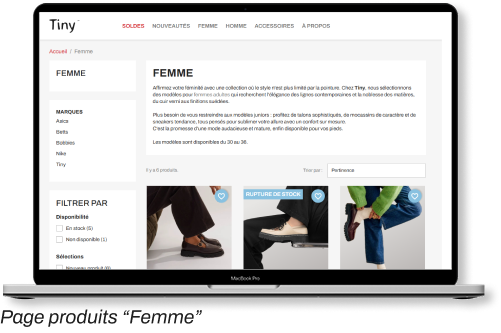
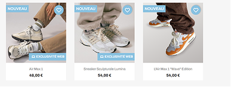
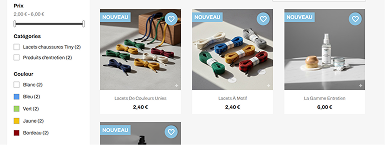

CONTEXTE
Projet de création d'une boutique e-commerce spécialisée pour les adultes ayant des petites pointures (32-35). L'enjeu était de transformer un outil standard en plateforme unique.
OUTILS UTILISÉS
Figma
Visuels & charte graphique
PrestaShop
Gestion CMS, intégration & CSS
Photoshop
Visuels & mockups

étapes
Planification : Identification d'un segment de marché négligé

Identité visuelle : Création d'un univers graphique

DÉPLOIEMENT
Pour concrétiser le projet, j'ai mis en place une solution e-commerce en utilisant PrestaShop. L'enjeu était de transformer un outil standard en une plateforme unique, entièrement alignée à l'identité de Tiny™.
Pour cela j’ai modifié plusieurs aspects :
- Le catalogue : Intégration de catégories
- Les produits : Ajout de produits pour chaque catégorie
- Fonctionnalités : Choix de pointure, filtres, exclusivités web, quantités
- Look and feel : Modification du CSS, de la structure et des visuels
LE PROJET EN IMAGES



CE QUE JE RETIENS
L'expérience UX/UI de Tiny™ repose sur une personnalisation CSS, transformant PrestaShop en une interface moderne et intuitive. En retravaillant la hiérarchie visuelle et les codes graphiques, j'ai créé un parcours d'achat pour que les adultes aux petits pieds puissent avoir une plateforme dédiée à leurs besoins. Le résultat est un site fluide et inclusif qui valorise l'utilisateur et facilite la conversion par le design.